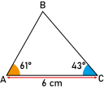
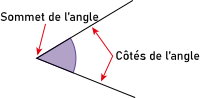
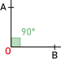
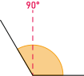
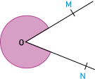
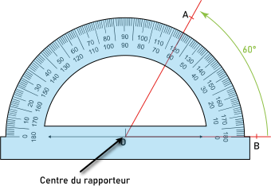

Activité Introduction
En utilisant le rapporteur et une règle, on souhaite tracer le triangle ci-contre.
- Trace un segment [AC] de 6cm.
- Place le centre de ton rapporteur sur le point A et aligne le "zéro" avec le segment.
- En partant du zero aligné avec le segment, place une graduation à 61°
- Retire ton rapporteur et trace la droite passant par A et la marque que tu vient de construire.
- Faire de même à partir du point C avec l'angle de 43°.
- Placer le point B à l'intersection des deux droites.

Définitions :
Angles :
Un angle est une partie du plan limitée par deux demi-droites de même origine.

Angles particuliers :
| Angle plat |
Angle droit |
Angle nul |
|
|

|
|
| 180° |
90° |
0° |
Remarque :
- Dans chacun des cas, le sommet de l'angle est O et les deux demi-droites qui forme l'angle sont [OA) et [OB).
Dans le cas générales, on classe les angles en deux catégories :
| Angle Aigu |
Angle Obtus |
 |
 |
| Angle de moins de 90° |
Angle de plus de 90° |
Notation :
Il existe deux notation d'angle en fonction de la partie du plan que l'on souhaite nommer. Lorsque l'angle est plus petit ou égale à un angle plat et lorsque qu'il est plus grand.
|
Angle inférieur à un demi-tour
|
Angle supérieur à un demi-tour
|
 |
 |
|
|
Mesure et construction :
Mesure d'un angle :
Pour mesurer un angle, on utilise le degré comme unité. Il se note avec le symbole °.
Remarque :
- Pour mesurer un angle, on utilise un rapporteur.
Lorsque l'on souhaite mesure un angle, on place le centre du rapporteur sur le sommet de l'angle ; On aligne l'un des 0° avec l'un des côté de l'angle et on mesure à partir de la position de la seconde demi-droite.


En fonction du 0° choisi, la mesure de l'angle se mesure avec les graduation à l'intérieur ou à l'extérieur du rapporteur.
Construction d'un angle :
- On place le rapporteur sur le sommet

- On aligne le rapporteur avec la demi-droite et on mesure 70°

- On trace la demi droite.